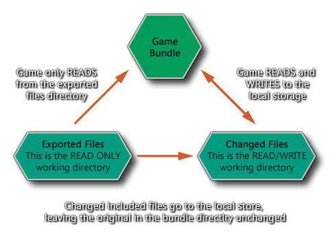

Al usar las funciones del sistema de archivos o los archivos incluidos con GameMaker Studio 2, es de vital importancia saber exactamente cómo funciona todo y qué sucede detrás de las escenas. Con ese fin, esta sección está diseñada para explicar y aclarar exactamente cómo se almacenan las cosas, dónde se almacenan y qué posibles límites o soluciones puede haber para este sistema.
Lo primero y más importante a tener en cuenta acerca de las funciones de archivo es que están limitadas, en general, a la caja de arena. Lo que esto significa es que GameMaker Studio 2 no puede guardar o cargar archivos desde ningún lugar que no forme parte del paquete del juego o el almacenamiento local del dispositivo sin la intervención explícita del usuario, e incluso esta entrada se limita solo al objetivo de Windows y Mac plataformas.
Para comprender la caja de arena primero que nada debes entender que hay dos áreas distintas para los archivos:
- El paquete de archivos: aquí se almacenan todos los archivos que están empaquetados con el juego ejecutable, incluidos los archivos que ha agregado a la lista de recursos de archivos incluidos del IDE de GameMaker Studio 2 (que son los archivos externos que desea empaquetar con el juego).
- Área de guardado: este es un área de almacenamiento del dispositivo que el juego puede escribir con seguridad y se garantiza que el juego sea un área que se puede escribir.
El siguiente diagrama puede ayudarlo a visualizar esto mejor: 
NOTA: nunca puede escribir en el directorio del paquete de archivos.
Las dos áreas objetivo, el directorio de paquetes y el área de almacenamiento local, están disponibles en cada plataforma de destino, pero en cada una funcionarán de forma ligeramente diferente. Sin embargo, GameMaker Studio 2 ha abstraído la esencia principal de lo que se puede y no se puede hacer, lo que facilita la redirección de juegos a múltiples entornos.
Para empezar, debe entender lo que significa cuando hablamos de la working_directory. Este es un sinónimo de las dos posibles ubicaciones de guardado (como se ilustra en el diagrama anterior) y cuando usa ese directorio hará una de dos cosas dependiendo de si está leyendo o escribiendo, y si el archivo del que está leyendo ha sido cambiado o no:
- Operaciones de lectura - working_directory primero verificará el área de guardar para ver si el archivo al que se está accediendo está allí, y si se usa eso. Sin embargo, si el archivo no existe en el área de guardar, entonces verifica el área del paquete de archivos y lo usa (si el archivo que se busca es un archivo incluido con su juego).
- Operaciones de escritura: esto solo puede ocurrir en el área de guardar.
NOTA: en general GameMaker Studio 2 manejará todo esto por usted y rara vez necesitará usar el working_directory construido en variable.Al usar estas dos reglas simples, ahora podemos ver cómo funcionan las siguientes funciones (estos son ejemplos que lo ayudarán a visualizar el proceso para las diferentes funciones disponibles):
- directory_create (y las otras funciones de directorio) solo funcionarán en el área de guardar.
- las funciones del sistema de archivos devolverán información sobre los archivos tanto del paquete como del área de guardado, pero solo escribirán en el área de guardado.
- las funciones para escribir archivos de texto, binarios o INI crearán un nuevo archivo en el área de guardar si aún no existe, copiando cualquier información de los archivos originales incluidos con el paquete del juego si existieran. Tenga en cuenta que los archivos originales permanecerán en la parte de solo lectura del directorio de guardar, pero no serán referenciados mientras exista una versión en la sección de lectura / escritura del área de guardar.
En las plataformas Windows y Mac OS hay una forma de guardar y cargar archivos desde fuera de la caja de arena y que está usando las funciones get_open_filename y get_save_filename. Ambas funciones requerirán que el usuario seleccione un área para cargar y guardar y la cadena de retorno se puede usar en el resto de las funciones de archivo para eludir el sandbox. Consulte las descripciones de funciones en la sección de scripts del manual para obtener más detalles.
Cuando trabaje con GameMaker Studio 2, debe saber que cada plataforma de destino tiene su propia área de guardado donde se pueden escribir y leer archivos y directorios. A continuación hay una lista de esas áreas para cada objetivo:
- Windows y Windows UWP: Windows tiene todos los archivos en %localappdata%\<Game Name> directorio (en Windows 7 esta es la /Users/<User Name>/AppData/Local/<Game Name> directorio).
- HTML5: todo se hace a través del almacenamiento local.
- Mac OS: el almacenamiento dependerá de si la aplicación está en modo de espacio aislado o no (siguiendo las reglas de las manzanas, siendo la ruta la que suele ser ~/Library/Application Support/<Game Name> )
- Ubuntu (Linux) - Los archivos se almacenan en Home/.config/gamename donde "Inicio" es el directorio de inicio de los usuarios - /home/<username>
- iOS: el almacenamiento es la ubicación estándar (como se ve a través de iTunes).
- Android: los archivos están en la ubicación estándar (que es invisible a menos que el dispositivo esté rooteado) /data/<package name>.
Vale la pena señalar que los módulos de destino HTML5 tienen un límite en el almacenamiento local (que puede estar entre 1 MB y 5 MB dependiendo del navegador) lo que significa que no se le permitirá guardar sprites grandes, capturas de pantalla, etc.